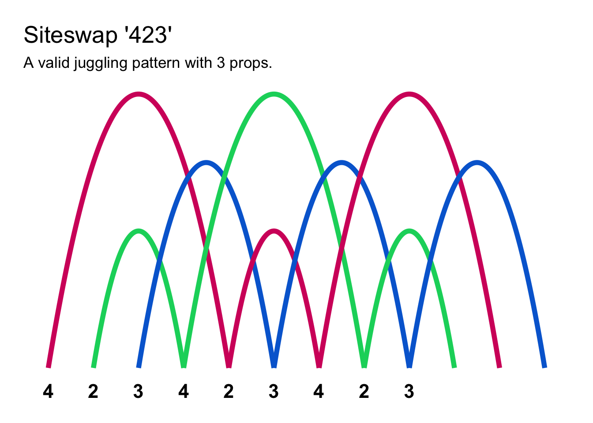
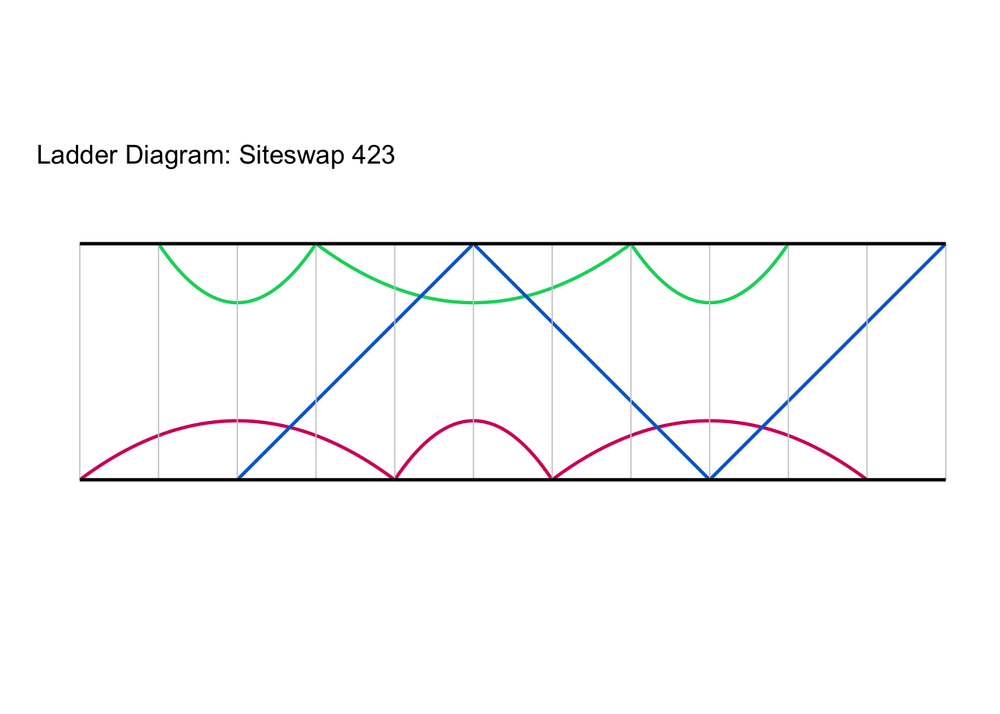
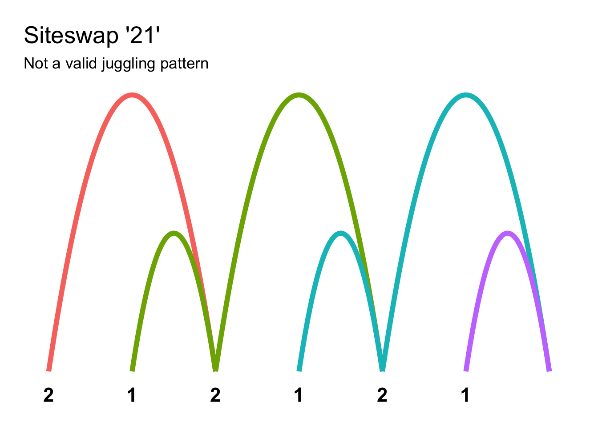
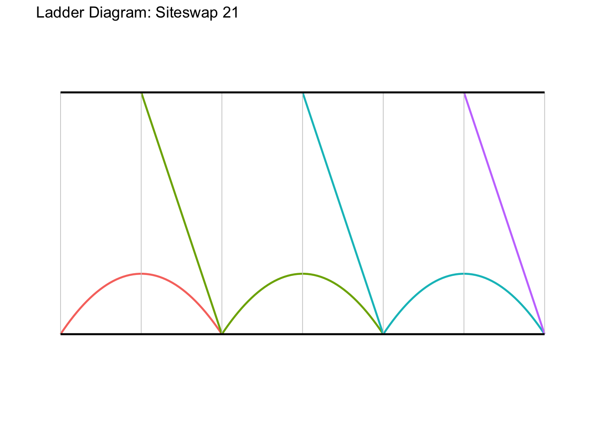
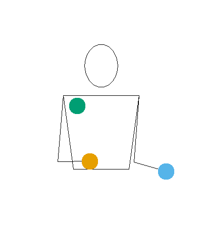

jugglr is a work-in-progress package to validate and visualise juggling patterns. The siteswap() function takes a sequence written in siteswap notation and creates an S7 object with class Siteswap and a child class for the type of siteswap, e.g. vanillaSiteswap.
At present, only vanilla siteswap is implemented. I plan to support synchronous and multiplex siteswap in the near future, and passing siteswap after that.
Note that not all functions are currently documented and test coverage is poor - both are works-in-progress.
Installation
You can install the development version of jugglr from GitHub with:
# install.packages("pak")
pak::pak("EllaKaye/jugglr")Siteswap
Once a Siteswap object is created, it’s print method will display information about the sequence, such as whether it is a valid juggling pattern and, if so, how many props it uses.
library(jugglr)
# A valid juggling pattern
ss423 <- siteswap("423")
ss423
#> ✔ '423' is valid vanilla siteswap
#> ℹ It uses 3 props
#> ℹ It is symmetrical with period 3
# A pattern that cannot be juggled
ss21 <- siteswap("21")
ss21
#> ✖ This siteswap is not a valid juggling patternVisualising the patterns
There are three ways of visualising the siteswap patterns:
- A timeline plot, which shows the throws by beat
- A ladder diagram, which shows the throws by beat and hand
- An animation (only if the pattern is valid)
Plots
These functions take Siteswap objects as their argument (currently only vanillaSiteswap). They return ggplot2 plots, so can be further customised.
palette <- c("#D4006A", "#00D46A", "#006AD4")
timeline(ss423) +
ggplot2::scale_color_manual(values = palette)
ladder(ss423) +
ggplot2::scale_color_manual(values = palette)
These plots are also useful for understand why non-valid sequences are not jugglable. We can see, for example, where two props would need to be caught at the same time (which is not permissible in vanilla siteswap). Because each prop is shown in a different colour, we can see where balls are disappearing or needing suddenly to appear.
timeline(ss21)
ladder(ss21)
Animation
jugglr provides a wrapper to the JugglingLab GIF server. Unlike the plotting functions, the main argument is any valid siteswap sequence as a string.
If called in Positron or RStudio, animate() will show the animation in the Viewer pane, otherwise in the browser. If a path argument is supplied, the animation will be saved to that location instead. Note that it can take several seconds for the animation to render.
For embedding in RMarkdown or quarto documents, there is a wrapper, animate_markdown(), which calls knitr::include_graphics(), and display options can be set as chunk arguments (e.g. for the output below, out.width="40%"):
animate_markdown("423", "man/figures/423-animation.gif", colors = palette)
#> ✔ Animation saved to: 'man/figures/423-animation.gif'